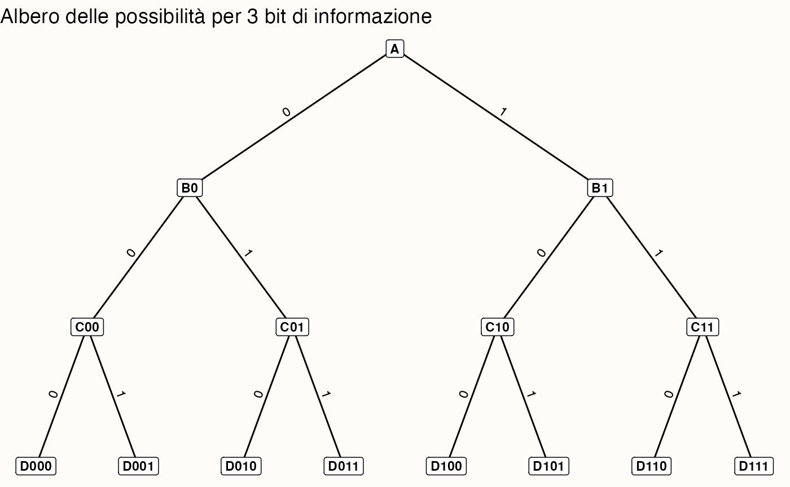

here::here("code", "_common.R") |>
source()
library(igraph)
library(ggraph)
library(tidygraph)
# Funzione per calcolare la lunghezza media del codice di Huffman
huffman_encoding <- function(probabilities) {
# Crea la "coda con priorità" iniziale come lista di liste
heap <- lapply(names(probabilities), function(sym) list(probabilities[[sym]], list(sym, "")))
# Funzione per ordinare la heap per probabilità (peso)
sort_heap <- function(heap) {
heap[order(sapply(heap, function(x) x[[1]]))]
}
# Costruzione dell'albero di Huffman
while (length(heap) > 1) {
heap <- sort_heap(heap)
lo <- heap[[1]]
hi <- heap[[2]]
heap <- heap[-c(1, 2)]
# Aggiunge i prefissi "0" e "1" ai codici
for (i in seq_along(lo)[-1]) {
lo[[i]][[2]] <- paste0("0", lo[[i]][[2]])
}
for (i in seq_along(hi)[-1]) {
hi[[i]][[2]] <- paste0("1", hi[[i]][[2]])
}
merged <- c(list(lo[[1]] + hi[[1]]), lo[-1], hi[-1])
heap <- append(heap, list(merged))
}
# Estrai la lista finale dei simboli e codici
final <- heap[[1]][-1]
names(final) <- sapply(final, function(x) x[[1]])
# Crea dizionario con codici
huffman_dict <- lapply(final, function(x) x[[2]])
# Calcolo della lunghezza media del codice
avg_length <- sum(mapply(function(sym, code) {
probabilities[[sym]] * nchar(code)
}, names(huffman_dict), huffman_dict))
return(list(avg_length = avg_length, codes = huffman_dict))
}41 Entropia e informazione di Shannon
“It is said that von Neumann recommended to Shannon that he use the term entropy, not only because of its similarity to the quantity used in physics, but also because ‘nobody knows what entropy really is, so in any discussion you will always have an advantage’.”
– C. M. Bishop, Pattern Recognition and Machine Learning (2006)
Introduzione
Immagina di dover prevedere la risposta di uno studente a una domanda di un test a scelta multipla. Se non sai nulla dello studente, potresti pensare che ogni risposta sia ugualmente probabile: c’è quindi la massima incertezza. Se invece sai che quello studente è molto preparato e risponde quasi sempre correttamente, allora l’incertezza è bassa. Questa quantificazione dell’incertezza è esattamente ciò che chiamiamo entropia.
In termini qualitativi, l’entropia misura la quantità di “sorpresa” che ci aspettiamo:
- è massima quando tutti gli esiti sono equiprobabili (situazione di totale incertezza),
- è minima quando uno degli esiti è praticamente certo.
Un esempio psicologico: nel lancio di una moneta equilibrata (\(p\)=0.5), non possiamo sapere se uscirà testa o croce → entropia massima; nel comportamento di un paziente che mostra sempre la stessa risposta a un questionario → entropia minima.
Panoramica del capitolo
- Introdurre il concetto di informazione e la sua unità di misura (bit).
- Definire l’entropia come media della sorpresa di Shannon.
- Interpretare l’entropia in termini di incertezza e numero di alternative equiprobabili.
- Stimare l’entropia da distribuzioni teoriche e da campioni osservati.
- Collegare l’entropia alla codifica di Huffman e al limite teorico di compressione.
41.1 Che cos’è l’informazione?
Un bit è l’unità elementare di informazione: rappresenta la scelta tra due possibilità ugualmente probabili. Ogni volta che raddoppiamo il numero di alternative, serve un bit in più per identificarle. Il logaritmo in base 2 (\(\log_2\)) indica esattamente quanti bit sono necessari per distinguere un certo numero di alternative.
41.1.1 Dalle scelte ai bit: un esempio visivo
Per capire come l’informazione possa essere misurata in bit, consideriamo il seguente esempio. Immaginiamo di trovarci a un incrocio e di dover scegliere una strada tra due possibilità. Ogni volta che ci troviamo di fronte a un incrocio, dobbiamo prendere una decisione: andare a destra o a sinistra. Ogni decisione può essere codificata con un bit: ad esempio, 0 per andare a sinistra e 1 per andare a destra.
Consideriamo il percorso con più incroci rappresentato nell’immagine seguente. Ogni percorso completo può essere codificato da una sequenza di bit, dove ogni bit corrisponde a una decisione (binaria) presa a un incrocio. Ad esempio, per raggiungere il punto D011, la sequenza di bit corretta è 011.

41.1.1.1 Quanti bit sono necessari per identificare una destinazione specifica?
Ogni decisione aggiunge un bit alla sequenza che descrive il percorso. Se ci sono \(m\) destinazioni possibili, servono
\[ n = \log_2 m \] bit per identificarne una in modo univoco. Nel nostro esempio, abbiamo otto destinazioni finali. Pertanto, sono necessari 3 bit (3 decisioni binarie) per identificarne una in modo univoco.
41.1.1.2 Cosa rappresenta un bit in questo contesto?
Un bit rappresenta un’unità elementare di informazione. In questo caso, ogni bit risponde alla domanda: “Devo andare a destra o a sinistra?”.
41.1.1.3 Perché utilizziamo i logaritmi?
Il logaritmo in base 2 ci permette di calcolare l’esponente a cui elevare 2 per ottenere un dato numero. In altre parole, ci indica quanti bit sono necessari per rappresentare un certo numero di destinazioni. Per l’esempio considerato, per arrivare a \(D011\) partendo da \(A\), sono necessarie 3 domande la cui risposta è binaria (destra/sinistra).
Per riassumere:
- per raggiungere il punto D011 partendo da A, abbiamo bisogno di prendere tre decisioni binarie (sinistra o destra) in corrispondenza di tre incroci;
- ogni decisione binaria può essere rappresentata da un bit (0 o 1). Quindi, per l’intero percorso, abbiamo bisogno di una sequenza di tre bit: 011;
- per rispondere alla domanda “Come si va da A a D011?”, abbiamo dunque bisogno di 3 bit di informazione.
In sintesi, esiste una relazione diretta tra il numero di bit di informazione e il numero di possibili destinazioni in un percorso decisionale binario. Ogni bit ci permette di scegliere tra due alternative, raddoppiando così il numero di possibili percorsi.
41.2 La sorpresa e l’informazione di Shannon
Introduciamo ora un elemento cruciale: la probabilità dell’evento. Quando due eventi hanno probabilità diverse, anche la quantità di informazione che trasmettono è diversa. Un evento molto probabile suscita poca sorpresa e, di conseguenza, veicola poca informazione. Al contrario, un evento raro produce una sorpresa maggiore e trasmette più informazione.
Shannon tradusse questa intuizione in una formula matematica, definendo l’informazione (o “sorpresa”) associata a un evento \(x\) come
\[ h(x) = \log_2 \frac{1}{p(x)} = -\log_2 p(x) \ \text{bit}. \tag{41.1}\] Questa espressione mostra chiaramente come l’informazione associata a un evento dipenda in modo inverso dalla sua probabilità: più l’evento è raro, maggiore sarà il valore di \(h(x)\).1
Per rendere l’idea, immaginiamo tre eventi con probabilità rispettivamente pari a 0.5, 0.25 e 0.10. Applicando la formula di Shannon, otteniamo che la sorpresa corrisponde rispettivamente a 1.00 bit, 2.00 bit e 3.32 bit. Si vede così che, man mano che la probabilità diminuisce, la quantità di informazione – misurata in bit – cresce. In altre parole, un’osservazione inattesa “pesa” di più, perché modifica in misura maggiore le nostre conoscenze sul sistema in esame.
41.2.1 Entropia come media dell’informazione di Shannon
Finora abbiamo considerato la sorpresa associata a un singolo evento. In molti casi, però, non ci interessa un esito isolato, ma vogliamo descrivere l’incertezza complessiva di un sistema che può produrre esiti diversi. Per farlo, occorre calcolare la sorpresa media tenendo conto di tutti i possibili risultati e delle rispettive probabilità. È proprio questo il significato dell’entropia.
Dal punto di vista matematico, l’entropia è la sorpresa media attesa, calcolata come media pesata dell’informazione di Shannon di tutti i possibili esiti di una variabile casuale \(X\):
\[ H(X) \approx \frac{1}{n} \sum_{i=1}^{n} h(x_i). \tag{41.2}\]
In questa espressione, \(h(x_i)\) rappresenta la quantità di informazione trasmessa da un singolo esito \(x_i\), secondo la definizione di Shannon vista in precedenza. L’entropia non si riferisce dunque a un evento specifico, ma alla sorpresa media che ci aspettiamo di provare osservando ripetutamente la variabile.
Se la distribuzione delle probabilità è perfettamente equilibrata – ad esempio in una distribuzione uniforme, dove tutti i risultati sono ugualmente probabili – l’entropia è massima, poiché ogni osservazione fornisce una quantità simile e relativamente alta di informazione. Se invece la distribuzione è sbilanciata – per esempio nel caso di una moneta truccata che dà quasi sempre “testa” – l’entropia è più bassa, perché la prevedibilità aumenta e la quantità media di informazione fornita da ciascuna osservazione diminuisce.
Il grafico seguente illustra come la sorpresa di Shannon varia in funzione della probabilità di un evento: eventi rari producono un valore elevato di sorpresa, mentre eventi comuni producono un valore basso.
41.2.2 Interpretazione dell’entropia
Diamo ora un significato concreto al valore numerico dell’entropia. Poiché essa rappresenta la media della sorpresa attesa osservando la realizzazione di una variabile casuale, tenendo conto di tutti i possibili esiti e delle loro probabilità, può essere interpretata come il numero medio di bit necessari per descrivere un’osservazione della variabile \(X\).
Quando l’entropia è espressa in bit, possiamo tradurla in un numero equivalente di alternative equiprobabili utilizzando la relazione
\[ m = 2^{H(X)} . \tag{41.3}\] Questo significa che un’entropia di \(H(X)\) bit corrisponde alla stessa incertezza che avremmo se dovessimo distinguere tra \(m\) esiti tutti ugualmente probabili. In questo senso, l’entropia misura la quantità di informazione contenuta in una variabile, esprimendola in termini del numero di scelte equiprobabili che la variabile potrebbe assumere.
41.2.3 Caratteristiche dell’entropia
L’entropia raggiunge il suo valore massimo quando tutti gli esiti possibili hanno la stessa probabilità di verificarsi. In questa condizione, l’incertezza è totale: non esiste alcun indizio che permetta di prevedere il risultato meglio del puro caso, e il grado di imprevedibilità è al massimo.
All’opposto, l’entropia è minima quando l’esito è completamente certo, cioè quando un evento ha probabilità pari a 1 e tutti gli altri hanno probabilità pari a 0. In tali circostanze non vi è alcuna incertezza, nessuna sorpresa e quindi nessuna informazione aggiuntiva ottenibile dall’osservazione.
Un’ulteriore caratteristica fondamentale è l’additività per eventi indipendenti: quando due o più eventi sono indipendenti, l’entropia complessiva della loro combinazione è pari alla somma delle entropie dei singoli eventi. Questa proprietà deriva direttamente dall’additività dei logaritmi nella formula di Shannon e riflette il fatto che, nel caso di eventi indipendenti, l’incertezza complessiva si ottiene sommando le incertezze prodotte da ciascun evento considerato separatamente.
41.3 Stimare l’entropia
Nelle sezioni precedenti abbiamo visto che l’entropia esprime la sorpresa media attesa quando osserviamo una variabile casuale, ed è strettamente legata all’informazione di Shannon dei singoli eventi. Passiamo ora dal concetto alla sua applicazione pratica, illustrando come calcolare l’entropia sia a partire da una distribuzione di probabilità teorica, sia da un insieme di dati osservati.
41.3.1 L’entropia di una distribuzione di probabilità
Immaginiamo una variabile casuale discreta \(X\), che può assumere un insieme di valori distinti \(x_1, x_2, \dots, x_n\), ciascuno con probabilità \(p(x) = \Pr\{X = x\}\). Quando osserviamo un particolare valore di \(X\), riceviamo una certa quantità di informazione, che possiamo interpretare come il grado di sorpresa associato a quell’esito. Un evento molto improbabile produce un’alta sorpresa, mentre un evento quasi certo trasmette poca o nessuna informazione.
Per tradurre questa intuizione in termini matematici, definiamo la sorpresa di un esito \(x\) come
\[ h(x) = -\log_2 p(x). \] Questa funzione ha le proprietà desiderate: è tanto più grande quanto minore è la probabilità di \(x\), e vale zero se l’evento è certo (\(p(x) = 1\)).
Poiché siamo interessati non a un singolo esito ma all’incertezza complessiva della distribuzione, calcoliamo la media della sorpresa rispetto alle probabilità dei diversi esiti. Otteniamo così la definizione di entropia di Shannon:
\[ H(X) = -\sum_{x \in X} p(x) \log_2 p(x). \tag{41.4}\] Ogni termine \(-p(x)\log_2 p(x)\) rappresenta il contributo informativo medio di un esito, ponderato in base alla sua probabilità.
Alcune proprietà fondamentali:
- L’entropia è massima quando la distribuzione è uniforme, cioè quando tutti gli esiti sono equiprobabili: in questo caso, l’incertezza è al suo livello più alto.
- L’entropia si riduce man mano che la distribuzione diventa più sbilanciata: se alcuni esiti hanno probabilità molto elevate, il grado di sorpresa complessiva diminuisce.
- Se un esito è certo, l’entropia si annulla: non c’è incertezza e nessuna nuova informazione viene trasmessa dall’osservazione.
In breve, l’entropia \(H(X)\) misura l’incertezza media di una variabile casuale e può essere interpretata come il numero medio di bit necessari per descrivere un’osservazione di \(X\).
41.3.2 L’entropia in un campione di osservazioni
Finora abbiamo considerato il caso in cui la distribuzione di probabilità sia nota a priori. Nella pratica della ricerca psicologica, tuttavia, disponiamo spesso soltanto di un campione di osservazioni. In questo caso possiamo stimare l’entropia calcolando le frequenze relative di ciascun valore osservato e utilizzandole come stima empirica delle probabilità.
Il risultato misura quanto la distribuzione dei valori nel campione sia incerta o imprevedibile. Un campione in cui le frequenze siano simili per tutti i valori possibili mostrerà un’entropia stimata elevata; al contrario, se nel campione un valore domina nettamente sugli altri, l’entropia stimata sarà bassa, indicando una distribuzione più prevedibile.
41.3.2.1 Interpretazione finale
L’entropia \(H(X)\) misura dunque l’incertezza media associata a una distribuzione di probabilità. Possiamo leggerla anche come il numero medio di bit necessari per descrivere un’osservazione di \(X\).
In altre parole, l’entropia ci dice quanta informazione, in media, otteniamo osservando il risultato di una variabile casuale: più alta è l’entropia, maggiore è l’imprevedibilità del fenomeno.
41.3.3 L’entropia di una variabile casuale continua
Anche per le variabili casuali continue possiamo definire l’entropia, estendendo il caso discreto: la somma sui possibili esiti viene semplicemente sostituita da un integrale. Questa generalizzazione è necessaria perché una variabile continua può assumere un numero infinito di valori. In questo caso, la probabilità che \(X\) assuma un valore esatto è sempre zero: ciò che conta non è la probabilità puntuale, ma la densità di probabilità nei diversi punti del dominio.
Per una variabile casuale continua \(X\), con funzione di densità di probabilità \(p(x)\), l’entropia, detta in questo caso entropia differenziale, è definita come
\[ H(X) = -\int p(x) \log_2 p(x) \, dx , \tag{41.5}\] dove \(p(x)\) rappresenta la densità di probabilità di \(X\) e l’integrale è calcolato su tutto il dominio della variabile.
Come nel caso discreto, l’entropia differenziale fornisce una misura dell’incertezza media associata alla distribuzione di probabilità. Se la densità è molto concentrata attorno a pochi valori (ad esempio un picco stretto), l’entropia è bassa: sappiamo già “dove aspettarci” la variabile, quindi l’incertezza è ridotta. Al contrario, una densità più “sparsa” e distribuita uniformemente implica un’entropia più alta, segnalando maggiore imprevedibilità.
Il segno negativo nella formula deriva dal fatto che, per probabilità comprese tra 0 e 1, il logaritmo è negativo: in questo modo l’entropia assume valori positivi e può essere interpretata, in analogia al caso discreto, come il numero medio di bit necessari per codificare un’osservazione della variabile continua \(X\).
41.4 La codifica di Huffman
Abbiamo visto che l’entropia \(H(X)\) di una variabile casuale \(X\) misura la sorpresa media di un esito. Un risultato fondamentale è che l’entropia rappresenta anche il limite teorico inferiore alla lunghezza media, in bit, di un codice binario che descrive gli esiti di \(X\). In altre parole: è impossibile creare un sistema di codifica (una “scorciatoia” per rappresentare l’informazione) che, in media, usi meno bit di \(H(X)\) per simbolo, senza perdere informazioni.
L’algoritmo di Huffman, sviluppato da David A. Huffman nel 1952, fornisce un metodo pratico per costruire un codice che si avvicina moltissimo a questo limite teorico.
41.4.1 L’idea di base
L’idea centrale è semplice e intuitiva, e riflette una strategia di ottimizzazione che anche la nostra mente potrebbe usare: assegna “etichette” mentali corte agli eventi comuni e etichette più lunghe agli eventi rari.
Pensate a come abbreviate le parole che usate più spesso in un messaggio di testo (“tvb”, “xké”, “nn”) mentre scrivete per intero quelle più rare. State applicando un principio simile a quello di Huffman per risparmiare tempo (bit cognitivi)!
41.4.2 Come funziona l’algoritmo, passo dopo passo
L’obiettivo è costruire un albero binario le cui foglie sono i simboli da codificare. La procedura è la seguente:
- Lista di partenza: Si parte da un elenco di tutti i simboli con le loro probabilità (o frequenze). Ogni simbolo è un piccolo “nodo”.
- Unire i più rari: Si identificano i due nodi con la probabilità più bassa e si uniscono per creare un nuovo nodo. A questo nuovo nodo si associa una probabilità pari alla somma delle probabilità dei due nodi figli.
- Ripetere: Si ripete il passo 2, unendo sempre i due nodi con la probabilità più bassa (considerando anche i nuovi nodi creati), finché non rimane un unico nodo finale, chiamato radice. Questo è l’albero completo.
-
Assegnare i codici: Si percorre l’albero dalla radice fino a ciascun simbolo (foglia). Ad ogni ramo sinistro si assegna il valore
0e ad ogni ramo destro il valore1. La sequenza di0e1incontrata nel percorso dalla radice alla foglia è il codice di Huffman per quel simbolo.
La caratteristica geniale di questo codice è che è un codice prefisso: nessun codice è l’inizio (il “prefisso”) di un altro. Questo elimina ogni ambiguità durante la decodifica, permettendo di leggere il messaggio senza bisogno di simboli separatori.
41.4.3 Esempio concreto: codificare un messaggio
Immaginiamo di dover codificare un messaggio composto da 43 caratteri, usando solo quattro lettere con queste frequenze:
| Simbolo | Frequenza | Probabilità |
|---|---|---|
| A | 20 | ~0.47 |
| B | 10 | ~0.23 |
| C | 8 | ~0.19 |
| D | 5 | ~0.12 |
Costruiamo l’albero:
- Passo 1: Uniamo i due simboli meno frequenti, D (5) e C (8), in un nuovo nodo che chiamiamo temporaneamente N1 con frequenza 13.
- Passo 2: Ora i nodi disponibili sono A(20), B(10) e N1(13). I due meno frequenti sono B (10) e N1 (13). Li uniamo in un nuovo nodo N2 con frequenza 23.
- Passo 3: Restano solo A(20) e N2(23). Li uniamo per formare la radice con frequenza 43.
L’albero risultante è:
(Radice:43)
/ \
0/ \1
(A:20) (N2:23)
/ \
0/ \1
(B:10) (N1:13)
/ \
0/ \1
(D:5) (C:8)Assegniamo i codici (percorrendo il percorso dalla Radice alla foglia):
- A: il percorso è solo
0→ Codice:0 - B: il percorso è Radice → N2 (
1) → B (0) → Codice:10 - D: il percorso è Radice → N2 (
1) → N1 (1) → D (0) → Codice:110 - C: il percorso è Radice → N2 (
1) → N1 (1) → C (1) → Codice:111
Ecco la nostra tabella di codifica finale:
| Simbolo | Codice | Lunghezza |
|---|---|---|
| A | 0 | 1 bit |
| B | 10 | 2 bit |
| D | 110 | 3 bit |
| C | 111 | 3 bit |
Notate come il simbolo più frequente (A) ha ottenuto il codice più corto (1 bit), mentre quelli più rari (C e D) hanno codici più lunghi (3 bit).
41.4.4 Collegamento con l’entropia: quanto ci siamo avvicinati al limite?
Torniamo alla teoria. Usando le probabilità dell’esempio, possiamo calcolare:
- Lunghezza media del codice (\(L\)): quanti bit usiamo in media per simbolo?
\[ \begin{align} L &= (p(A)\cdot 1) + (p(B)\cdot 2) + (p(C)\cdot 3) + (p(D)\cdot 3) \notag\\ &= (0.47\cdot 1) + (0.23\cdot 2) + (0.19\cdot 3) + (0.12\cdot 3) \notag \\ &\approx 1.9 \ \text{bit} \end{align} \]
- Entropia (\(H(X)\)): il limite teorico minimo di bit per simbolo.
\[ \begin{align} H(X) &= -\big[\,0.47\log_2(0.47) + 0.23\log_2(0.23) \notag\\ &\qquad + 0.19\log_2(0.19) + 0.12\log_2(0.12)\,\big] \notag\\ & \quad\approx 1.85 \ \text{bit} \end{align} \]
Risultato: La nostra codifica di Huffman (1.9 bit/simbolo) è estremamente vicina al limite teorico dell’entropia (1.85 bit/simbolo). La piccola differenza è dovuta al fatto che i codici devono avere una lunghezza intera (non possiamo avere un codice di 1.85 bit!), mentre l’entropia è un valore medio che può essere decimale.
41.4.4.1 In sintesi
| Concetto | Significato Teorico | Analogia Psicologica (Approssimativa) |
|---|---|---|
| Entropia H(X) | Limite teorico assoluto di compressione. Misura l’incertezza/intrinseca. | Il “carico cognitivo” minimo necessario per rappresentare uno stimolo. |
| Codifica di Huffman | Metodo pratico per costruire un codice ottimale che si avvicina al limite H(X). |
Una strategia cognitiva efficiente per categorizzare informazioni (es. etichette mentali corte per concetti comuni). |
| Lunghezza media L | Il risultato pratico ottenuto con Huffman. | Il reale “costo” cognitivo della strategia adottata. |
| Differenza (L - H(X)) | Quanto il metodo pratico si discosta dal limite teorico ideale. | Quanto la nostra strategia cognitiva è efficiente rispetto all’ideale. |
In sintesi, l’algoritmo di Huffman rappresenta un ponte tra la teoria e la pratica. Esso dimostra in modo tangibile come il principio astratto dell’entropia—il limite teorico di compressione—possa essere realizzato in una strategia concreta. Questo processo di ottimizzazione offre una potente analogia per ipotizzare come la nostra mente potrebbe elaborare le informazioni in modo efficiente, privilegiando gli stimoli più frequenti per risparmiare risorse cognitive.
41.5 Applicazioni psicologiche
Il concetto di entropia, inteso come misura della sorpresa media associata a un evento, trova applicazioni dirette anche nello studio di fenomeni psicologici. In particolare, la sorpresa — formalizzabile in termini di informazione di Shannon — è stata associata a cambiamenti emotivi, processi di apprendimento e modulazione della motivazione.
Un esempio classico è fornito da Spector (1956), che studiò l’effetto della probabilità a priori sulla soddisfazione dei soggetti in seguito a una promozione lavorativa. I risultati mostrarono che esiti inizialmente percepiti come poco probabili — e quindi più sorprendenti quando si verificano — producevano un impatto emotivo maggiore rispetto a esiti attesi. In altre parole, la sorpresa amplificava la risposta affettiva, confermando l’idea che l’entropia non sia solo una misura astratta, ma un indicatore della potenziale intensità della reazione emotiva.
Ricerche più recenti, in contesti sia sperimentali che ecologici, hanno confermato questo legame. Ad esempio, studi nell’ambito delle neuroscienze cognitive hanno mostrato che eventi ad alta sorpresa modulano l’attività di aree cerebrali legate all’elaborazione emotiva, come l’amigdala e la corteccia prefrontale ventromediale, influenzando sia l’umore immediato sia l’apprendimento successivo. Allo stesso modo, nell’analisi dei dati di Ecological Momentary Assessment (EMA), la probabilità soggettiva di un evento può essere messa in relazione alla variazione momentanea dell’umore, mostrando che episodi rari o inattesi tendono a generare oscillazioni emotive più marcate.
Questi risultati illustrano bene come il concetto di entropia possa essere utilizzato in psicologia non solo come strumento di misura della distribuzione di probabilità degli eventi, ma anche come variabile esplicativa in modelli che indagano il legame tra aspettative, sorpresa e stati emotivi. Questo stesso legame sarà centrale quando, nelle prossime sezioni, introdurremo la divergenza di Kullback–Leibler e la utilizzeremo per confrontare modelli in un’ottica bayesiana.
Riflessioni conclusive
In questo capitolo abbiamo esplorato come l’entropia ci permetta di misurare quantitativamente l’incertezza e l’informazione in sistemi complessi. Attraverso esempi concreti - dal lancio di una moneta alla codifica di messaggi - abbiamo visto come questo concetto matematico possa essere applicato in modo pratico e intuitivo.
41.5.1 Cosa abbiamo imparato
- L’entropia misura l’incertezza: Più una situazione è imprevedibile (come una moneta equilibrata), maggiore è la sua entropia. Situazioni prevedibili (come un comportamento stereotipato) hanno invece entropia bassa.
- L’informazione è sorpresa: Eventi rari e inaspettati ci forniscono più informazione rispetto a eventi comuni. La formula di Shannon cattura precisamente questa intuizione quotidiana.
- Esiste un limite alla compressione: L’entropia rappresenta il numero minimo di bit necessari per descrivere un’informazione senza perdite. L’algoritmo di Huffman ci mostra come avvicinarci a questo limite nella pratica.
41.5.1.1 Perché è rilevante per la psicologia?
Questi concetti non sono solo astratti, ma trovano applicazioni concrete nella ricerca psicologica:
- Modellizzazione cognitiva: I processi mentali possono essere visti come sistemi che elaborano informazione. L’entropia ci aiuta a quantificare quanto “lavoro” cognitivo sia necessario per processare stimoli diversi.
- Emozioni e sorpresa: Come abbiamo visto nell’esempio finale, eventi sorprendenti (alta entropia) tendono a produrre risposte emotive più intense. Questo collegamento tra probabilità e emozione è un campo di ricerca attivo.
- Valutazione dei modelli: Nei prossimi capitoli vedremo come l’entropia sia la base per strumenti che ci permettono di confrontare modelli psicologici e valutarne la capacità predittiva.
41.5.1.2 Uno sguardo al futuro
L’entropia non è solo un concetto isolato, ma il fondamento per strumenti più avanzati che incontreremo:
- la divergenza di Kullback-Leibler (nel prossimo capitolo) misura quanto un modello si discosta dalla realtà, usando proprio i concetti di entropia che abbiamo appreso;
- l’ELPD (Expected Log Predictive Density) ci aiuterà a confrontare modelli bayesiani valutando la loro capacità predittiva.
Comprendere l’entropia significa quindi possedere una chiave interpretativa potente: ci permette di passare dall’osservazione qualitativa (“questo comportamento è più variabile”) alla misurazione quantitativa (“l’entropia di questo comportamento è X bit”).
Bibliografia
Spector, A. J. (1956). Expectations, fulfillment, and morale. The Journal of Abnormal and Social Psychology, 52(1), 51–56.
Stone, J. V. (2022). Information theory: a tutorial introduction, 2nd edition.
Ricorda che per le proprietà dei logaritmi: \(\log(1/x) = -\log(x)\), perché \(\log(1/x) = \log(1) - \log(x) = 0 - \log(x)\).↩︎